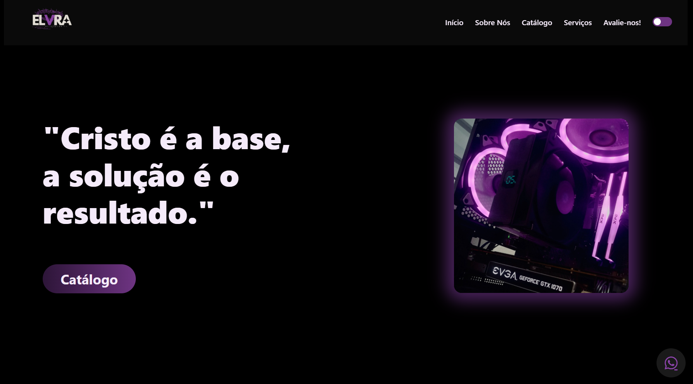
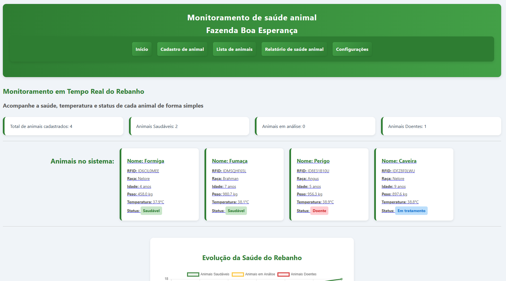
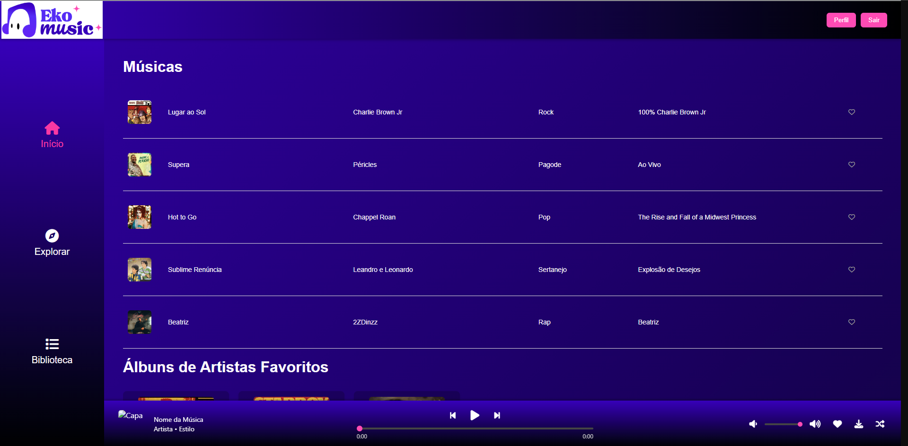

André Mendes
Desenvolvedor de Sistemas | Técnico em Infraestrutura de TI & Hardware
Desenvolvedor de Sistemas | Técnico em Infraestrutura de TI & Hardware
Olá, sou o André — Profissional de TI com experiência prática em desenvolvimento back-end, suporte técnico e projetos de IoT. Atuo com Java, Spring Boot e APIs REST, além de possuir forte vivência em diagnóstico, manutenção e otimização de sistemas e hardware.
Tenho um perfil versátil, com capacidade para atuar tanto no desenvolvimento de software e criação de soluções digitais quanto na área de suporte técnico e infraestrutura.
• Desenvolvimento e manutenção de aplicações internas utilizando Java e Spring Boot.
• Criação e consumo de APIs REST para integração e comunicação entre sistemas.
• Organização, análise e manipulação de dados para suporte às operações internas.
• Aplicação de boas práticas de código, garantindo o funcionamento estável das ferramentas.
• Diagnóstico e reparo de computadores e sistemas, com foco na rápida resolução de problemas e estabilidade.
• Otimização de sistemas e execução de manutenção preventiva, garantindo o funcionamento contínuo dos equipamentos.
• Atendimento direto a clientes, garantindo qualidade no serviço e cumprimento rigoroso de prazos.
• Montagem e instalação de infraestrutura técnica e painéis de telecomunicações.
• Execução de ligações elétricas (CA e CC) seguindo padrões de segurança e protocolos técnicos.
• Organização e identificação rigorosa de cabos e componentes, com suporte geral em infraestrutura.
Desenvolvimento de um sistema focado na coleta de dados e monitoramento contínuo em tempo real.
Integração de dispositivos e sensores (IoT/ESP32) para leitura e transmissão rápida via MQTT.
Back-end estruturado em Java, Spring Boot e APIs REST, com gestão ágil do projeto (Scrum) via Jira.

Plataforma web desenvolvida para apresentar minha atuação autônoma com suporte técnico e infraestrutura. O site funciona como um catálogo digital dinâmico, possuindo interface moderna e um sistema integrado em JavaScript que agiliza a solicitação de orçamentos e serviços diretamente via WhatsApp ou E-mail.
Ver Projeto
API de monitoramento de saúde de animais em ambientes rurais (acadêmico). Foco em visualização de dados como RFID, raça e peso. Inclui gráficos interativos e simulação de temperatura.
Ver Projeto
Plataforma intuitiva de streaming musical desenvolvida do zero com HTML5, CSS3 e JavaScript puro. Simula a experiência completa de um serviço como o Spotify, contando com um player global 100% funcional, transição de faixas, controle de volume, catálogo dinâmico e sistema de biblioteca pessoal.
Ver ProjetoPara avaliar o código-fonte destes e de outros projetos, visite meu perfil no GitHub. Lá mantenho um registro ativo da minha evolução técnica, incluindo estudos contínuos em Java, React e integração de APIs, além da aplicação de boas práticas de versionamento.
Acessar GitHub Completo